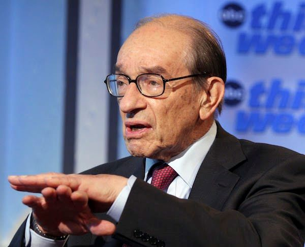

【经济】谈通货膨胀
2015-06-29 12:37:00
原文网址：https://blog.udn.com/MengyuanWang/108908746
在上周的第四场演讲后，有位听眾问到通货膨胀和央行政策的问题，当时我给了一个两分钟长度的答案。其实我在这方面的观点和前文《民主政治与自由经济》里讨论的市场经济和民主政治的充要条件一样，都是我个人多年来自修的独有心得，与主流学术界的说法有衝突，所以不论对错深浅，它应该还是有记录下来的价值。不过这问题比较复杂，无法用一个段落就说清楚，不适合在《四场演讲》里草草带过，所以在此详细谈一谈。
美国经济学界始终很顽固地认为重要的通货膨胀只有一种，也就是所谓的CPI（Consumer Price Index）。自1990年代中期开始，CPI反常地温和，当时的联储会主席Alan Greenspan因此而觉得不必紧缩银根，把利率定在很低的水平，结果是股票市场成倍上涨，但是Greenspan不但没有自觉这个泡沫是他一手吹大的，居然还质疑说那是非里性的狂欢（Irrational Exuberance）。互联网泡沫爆破之后，Greenspan压低利率的偏好更为严重，于是一个更大的泡沫就出现在房地產界；Greenspan仍然一无所觉，美国经济学界甚至搞出了“大温和”（“Great Moderation”）的歪论来解释为什么金融性的资產价格涨翻天了，CPI却仍然走低。我在几场Greenspan的演讲里，只见一片互相拍肩庆贺的自我满足感，像Robert Shiller这种略持保留态度的学者都被当做扫兴鬼，我这种名不见经传却私下觉得这些美国经济学人不是骗子就是白痴的旁观者自然是一句话都不敢吭的。当然几年后房地產泡沫也爆了，全球经济损失了几万亿美元，继任Greenspan为联储会主席的Ben Bernanke虽然学术高明，明知宽松银根是这些泡沫的动力来源，却也必须两害相权取其轻，不但把利率压到基本为零的水平，还进一步凭空印了四万多亿美元的钞票，冒着动摇美元国际地位的危险，也要把股票市场炒过2000年的高峰。可是至今七年了，美国的通货（亦即M3）一下子增加了30%，工资却还停在1989年的水平，CPI也是年年温和，那么到底有没有通货膨胀？
Alan Greenspan，1987年到2006年间的联储会主席。他似乎真正相信美式经济学的胡扯，所以在骗子和白痴之中，他属于后者。在1996年到2006年间，美国经济学界和金融界普遍称他为Maestro（大师），当时我就对“大师”这两个字有了很大的反感。此前有读者留言要给我同样的称号，还请大家饶了我；王孟源虽然不才，还不至于想被人与祸国殃民的白痴相提并论。
其实要解释这些歷史很简单，我们只要了解到通货膨胀并不是一次元的，而是一个有好几个独立变数的现象，就可以得到自相吻合（Self-Consistent）的逻辑。我个人在观察宏观经济现象的时候，至少会设定四个通货膨胀的变数，分别对应着原材料、工资、消费產品和金融资產。原材料的价格主要由供给与需求的平衡来决定；工资在一个国家内部主要由政策决定是否强迫资本家为劳工加薪分利，但是在国际间是要互相竞争的；消费產品的价格基本由前两项再加上厂商的利润来决定；而金融资產却是与前三者都没有关联，完全视储蓄出来的多余资本（尤其是财阀和银行所能动用的资本额）总量来决定；追求金融资產的剩余资本越多，价格就会被推得越高。自1990年代起，中国的崛起为全世界提供了一个工资低廉却有可靠供应链的生產地，于是逐渐吸收了欧美原有的工业產能，结果同时压低了全球工资和消费品的价格，使CPI保持温和。Greenspan不明白这个道理，宽松银根灌注了万亿美元级的游资进入美国经济，但是实体经济正往中国转移，自然没有能力或意愿吸收这笔资金，于是就完全流入金融资產的市场，先是股票，后是房產，泡沫越吹越大。
到了2000年代，中国自身的快速基础建设开始消耗大量的原材料，使得这方面的通货膨胀压力步步提升，但是中国工业界的激烈竞争迫使其生產效率也高速上升，再加上廉价的中国產品对高价欧美產品的逐步替代，使欧美的CPI维持相当温和的程度，但是这对他们的工资水平却是雪上加霜。人类的心理是很难接受减薪的（经济学里有两个很重要的零障碍，第一个是利率不能跌过零，否则储蓄户还不如换成现金；第二个是工资的通货膨胀率，降薪对士气的打击很大，往往还不如乾脆解雇部分员工），所以这个外来竞争压力的结果是工资不升不降，但是就业率往下掉来减低企业的工资总付出，例如美国在最近15年间成年就业率由64%降到了59%（中国是75%）。当然与此同时，美国企业的利润是很健康的，因为他们的成本由中国制造商负责压低了。至于联储会的降息和量化宽松，那些多出来的钱都必然先进了银行和他们的大客户的口袋，最自然的下一步就是进入金融资產，所以过去7年来美国的股市、债市和房市都达到或接近了歷史新高，老百姓真正在乎的工资和就业率却基本感觉不到任何助力。
蓝线是美国过去15年的失业率（右标），红线则是就业率（左标），灰区是经济衰退期。2000年时的64.5%就业率，是美国自70年代开始女性大批进入就业市场后所到达的史上最高点。目前的失业率虽然已降到与2003年相同的6%，就业率却下降了3+%，这是因为失业率只算还在找工作的人，一旦放弃找工作就只反映在就业率的降幅。
日本在过去25年饱受通货紧缩之苦，其实所谓的通货紧缩问题，和美国同样是工资和就业率的紧缩，老百姓对消费价格是寧可便宜些的。至于金融资產，那更是无关一般人民的生活，涨价主要裨益于银行、财阀和国际资本。所以安倍的量化宽松+货币贬值政策，先天上就是缘木求鱼；前者只会推高股价，后者则推高进口的原材料和消费品价格，日本人民真正需要的工资增长恰是唯一不受影响的通货膨胀变数。在全球贸易时代，工资增长靠的是生產竞争力的提升，而要提升竞争力，只能靠痛苦的结构改革。如果为了止痛，暂时进行量化宽松是合理的；但是像安倍这样指望用止痛药来治癌，那就注定只会徒然增加国债。日本的国债已是世界第一，高达GDP的230%，比希腊的180%还要离谱的多，全靠着强迫邮政储蓄体系来购买新债拖延时间。安倍的胡搞必然会让国债逐步往GDP的300%甚至400%进升，届时危机爆发后将比希腊还要凄惨。
为什么这么简单的道理，美日政府却不懂呢？这是因为他们都相信美式经济学，而我已经在几篇前文里解释过，美式经济学完全只是美国财阀的宣传机制。把人民想要的工资通货膨胀和人民不想要的消费品通货膨胀混为一谈，在联储会放松银根时可以说是为人民加薪，在紧缩银根的时候可以说是为了控制物价，实际上真正操弄的是财阀炒作的金融资產。我在上周给第二场演讲的时候，有一位听眾问道，让财阀控制全国经济有什么不好？这里就是一个例子：为了财阀的利益，经济学界不说实话，结果是政府就无法採行正确的金融和货币政策，最后造成影响国运的极大损失。所以不但财阀专制不好，凡是不能诚实讨论政策得失的国家，注定是衰退的命。台湾的政客和传媒，基本上说的都是为了主观利益的胡扯，那么近年来的国势衰颓就不但是合理的，也是必然的。
13 条留言
中共还有指定贷款对象的能力，很好，千万不能再让银行业自由化了。
很对，别说社会学，小小的一个赛马博彩，有人想引入电脑量化模式，还不一样一败涂地？反而，以科学分析加（有经验作底子的）感观评估，还有可能杀出一条血路。
／／是的，知其不可为而为之，在这点上我的确是不够理性／／
广义的理性，包括理智和良知，前者在主要表现在思维分析上，后者主要表现在道德勇气上。理性除了计算和分析之外，其实也包含了人性深处的道德因素或本能（对逻辑的认知和运用的能力，其实也是人的本能之一）－－不过这一点不易说清，不想跑题，只想为王兄鼓鼓劲而已。
／／安倍的胡搞必然会让国债逐步往GDP的300%甚至400%进升，届时危机爆发后将比希腊还要凄惨的多了。／／
最后来点实际的，三至五年内，长仓沽空日元，有大利可图？
不过却很少留言，请见谅。在中国的论坛中，已经有很多人在拜读和讨论你的blog。请继续加油~！~祝好！
用数学模型解释经济问题现在看起来问题很多
Thomas Piketty说过“Too often, economists build very complex mathematical models to look scientific and impress people. I have nothing against mathematics — I initially trained as a mathematician — but it’s usually to hide a lack of ideas. “
Alfred Marshall也说: [I had] a growing feeling in the later years of my work at the subject that a good mathematical theorem dealing with economic hypotheses was very unlikely to be good economics.
我想他们都会赞同王兄的做法.
台湾高速公路实施电子收费ETC，收费站拆了，近千名收费员解雇资遣了。ETC的运作，毕竟少掉很多很多人，少掉的工作机会，就永远少掉了，不可能再盖收费站，请他们回来。毕竟ETC的运作，也更能发挥高速公路的运输功能，车辆不需要在收费站减速加速，连能源损耗也变少了。
廿多年前去大陆，在广州进新华书局，除了门口柜台收费员外，书架间还有员工在看有没人偷书；在长沙搭公车，有两个车掌在收票。那时台湾书店，一人搞定，公车司机兼车掌收票的工作，也都很顺利。我想了一想，不是大陆没法依样操作，毕竟技术上没问题，而是会丧失很多工作机会，会有大量失业人口。
后来大陆经济快速发展，就业机会多，这种现象就少了，或许己经不见了。但在经济发展没那么快的国家，可能还得如此，三四年前去缅甸，搭公车，也看到两个车掌。那时在缅甸没自动提款机，信用卡不能使用，我在台湾买缅甸机票买了好几天，信件往来，到了缅甸，他们还得电话打了好些通，因为没电脑连线。
生產效率提高，若相对地无法提供出更多的就业机会，工资大概就不容易高上去。我觉得这世界，财富的生產已无问题，但分配上成了大问题，大部份给资本家所夺。有钱人要增加财富，可以靠更多更高的自动化，减少依赖更多人力；穷人则被替代了，他没被压榨，而是被直接抛弃了。
美日的问题是连央行制定利率，都是为了金融大鱷的方便，完全没有考虑到实体经济的需要。美式经济学不把通货膨胀讲清楚，就是为了要这样浑水摸鱼。
美国这几年乾旱严重牛群缩小, 所以牛肉涨的最利害. 我是不吃牛肉就跟没吃饭一样, 所以受害深重. 但这是天灾无可厚非. 可恶的是我十年来开车从无肇事记录, 但我的汽车保险从三年前每半年就涨一次 (每次偷涨一点). 到去年我受不了打电话去抗议, 他们竟说那是因为我居住的地区每年车祸都有增长的关系. 这就是说别人肇事我也要跟着买单, 真是岂有此理! 不过我想这是藉口; 实际上应该还是因为通膨所致.
加州的GDP以全世界而言, 可以排在各国中的第八名, 但贫穷率却是全美最高. 生活在贫穷线以下的除了在洛杉矶外, 连在硅谷都有一大票; 这是典型的贫富不均.
我完全不懂经济, 但总觉得在加州, 通膨在基本开销方面占的比重太大, 长久下来会导致此地的贫穷人口不断增加. 而通膨再加上全球化自动化影响就业(尤其是刚毕业的大学生), 此地中產阶级的群体恐怕也会不断的被缩小.
楼上刘兄所说的自动化剥夺了大量工作的机会, 会造成很严重的问题, 我完全同意! 想想看; 人工智慧发展到极致后, 大部分的人都没事干了, 那会是一种什么状况? , , 本来人类发展科技原为的是增进自己的福祉, 没想到最后反而为科技所伤. 所谓的人万物之灵, 其实是聪明反为聪明误, 是很有问题的.
˙
这是21世纪人类的最大挑战，大于霸权归属和全球暖化；而美式体制对它是绝对无解的。只希望中共能做个良好的示范；不过任何限制资本的政策都会引起强力的反弹和外逃，实在是个棘手的问题。
王兄，卢先生不久前有个新帖子，谈的就是通胀和债务的关系，可以一观。
blog.sina.com.cn/s/blog_4a405fd90102vgjv.html
博客里还有一篇谈陈云的经济政策，时右时左，也很有启发，起码，符合我所认知的歷史事实．
blog.sina.com.cn/s/blog_4a405fd90102vfuk.html